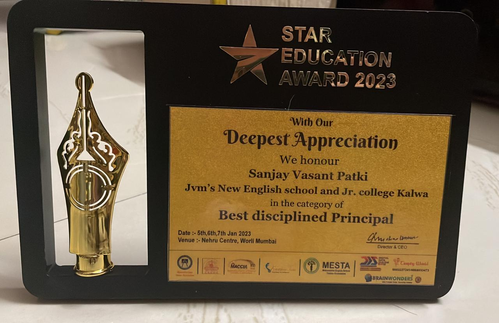

We as a Institute has completed its SILVER JUBILEE YEAR in 1999 and RUBY JUBILEE in 2014. It is matter of pride that we are successful in starting DEGREE COLLEGE in faculties of ART,SCIENCE and COMMERCE. Our school students participate in interschool competitions,competitive exams,sports,quiz competition,science exhibition and many more activities and made the institution pride by securing various prizes. Most recent i.e.in 2023 interschool competition that our school participated was the OORJA SCIENCE CARNIVAL where our students bagged 13 prizes in different competitions. Recently PRINCIPAL of our institution Honourable Mr. Sanjay Patki was awarded with the "BEST DISCIPLINED PRINCIPAL" award.
The first batch of students appeared for S.S.C Board Examination which brought an inspiring result of 92%in 1986. With the untiring efforts of teachers, this high standard is further raised to 100% result in the Board-Exam,in subsequent years. From last 3 years we have started C.B.S.C. pattern in our institution and best staff has been appointed for greater progress. Our school building is build now to seven storay building. Our institute will continue efforts for the betterment of our students and counted as ideal educational institution in the STATE.
BACK